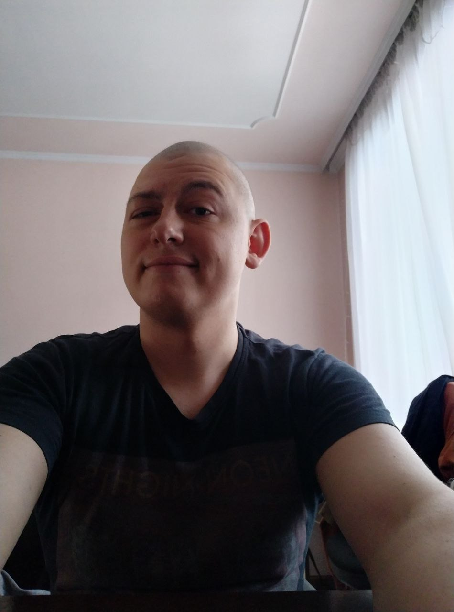

Про мене

Біографія
Вітаю! Мене звати Чорний Валентин. Мені 26 років, я з міста Хмельницький, Україна.Працюю у
Комунальному
некомерційному підприємстві «Хмельницька центральна районна лікарня». Моя посада: лікар -терапевт
стаціонарного терапевтичного та паліативного відділення.
Освіта
Закінчив БДМУ та інтернатуру у ВНМУ , маю повну вищу медичну
освіту.
Досвід
Досвіду роботи у сфері ІТ в мене немає, раніше сам вивчав HTML та СSS, але без явного результату.
Знайомство з Beetroot
Курси від компанії «Beetroot» мені порадив знайомий, що вже працює у сфері ІТ. Також я пройшов
безкоштовний міні-курс з Frontend розробки, який мені дуже сподобався.
Моя мета
Я тут для того щоб оволодіти навичками Fontend- розробника. В подальшому хочу знайти роботу та
поступово
перейти у нову для себе галузь!